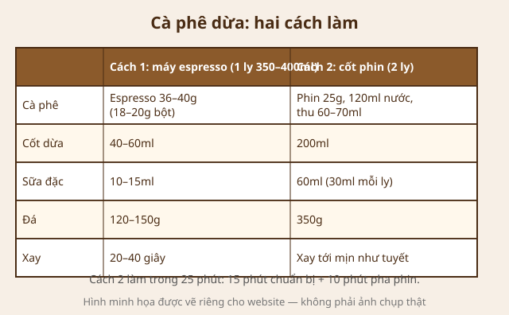

Cà phê dừa: pha với cốt dừa và sữa đặc
Tác giả: Ruler
Một ly cà phê dừa ngon hay không thường được quyết định trước khi bạn bật máy xay: cốt dừa đã đủ lạnh chưa, cà phê đã đủ đậm chưa, đá đã đủ cứng chưa. Bài này cũng bắt đầu từ ba câu hỏi, nhưng là ba câu hỏi về hoàn cảnh của bạn: nhà bạn có máy espresso không, bạn pha một ly hay hai ly, và bạn uống ngay hay mang đi. Trả lời xong ba câu hỏi đó, bạn mới cần tới định lượng.
1. Ba câu hỏi trước khi mua nguyên liệu
Câu hỏi thứ nhất: nhà bạn có máy espresso không? Có máy thì bạn làm một ly 350–400ml, chiết espresso rồi xay nền dừa riêng. Chỉ có phin thì bạn làm hai ly cùng lúc, pha cốt phin đậm rồi xay dừa trong lúc chờ phin nhỏ giọt. Moka pot là lựa chọn thứ ba: dùng khoảng 35–45ml cà phê moka, rồi tự cân lại lượng cốt dừa theo độ đậm của mẻ moka đó.
Câu hỏi thứ hai: bạn pha một ly hay hai ly? Một ly thì định lượng nhỏ, dễ chỉnh ngọt từng lần. Hai ly thì bạn xay một mẻ dừa chung cho cả hai, rồi chia đều — nhưng lượng sữa đặc tính theo mẻ sẽ cao hơn tính theo ly, vì mẻ hai ly xay cùng 350g đá. Đừng lấy lượng sữa đặc của mẻ hai ly chia đôi rồi áp sang ly một, hay ngược lại. Hai công thức ở mục 3 ghi rõ mỗi công thức làm mấy ly, để bạn khỏi nhầm.
Câu hỏi thứ ba: bạn uống ngay hay mang đi? Uống ngay thì có thể bỏ qua bột nền frappe: độ sánh lúc này dựa vào cốt dừa lạnh, đường, chất béo và lượng đá. Mang đi thì bột nền giúp ly giữ form lâu hơn và tách nước chậm hơn, nhưng phải đúng loại dành cho đồ uống đá xay và đúng liều in trên bao bì. Ba thứ này khác nhau hoàn toàn và liều dùng cũng khác nhau: bột nền dành cho đồ uống đá xay, còn bột kem béo hay chất ổn định đậm đặc lại dùng theo cách khác. Đừng gom chúng dưới một cái tên chung kiểu "chống tan" rồi dùng chung một liều.
2. Chọn cốt dừa trên kệ hàng: đọc nhãn, không đọc tên
Đi mua cốt dừa, bạn sẽ thấy trên kệ có bốn loại tên na ná nhau: nước cốt dừa, sữa dừa, coconut cream và syrup dừa. Mỗi hãng đặt tên một kiểu, nên tên gọi không đáng tin bằng nhãn thành phần. Khi cầm một hộp lên, bạn chỉ cần trả lời ba câu hỏi: nó béo tới đâu, đặc tới đâu và ngọt tới đâu. Ba câu trả lời đó quyết định ly của bạn, còn tên in trên bao bì chỉ là gợi ý ban đầu.
Xếp theo độ đặc, syrup dừa đứng cuối: nó chỉ cho mùi thơm và vị ngọt, không đủ béo để thay nước cốt dừa. Sữa dừa đặc hơn syrup một bậc, nhưng vẫn là bản loãng của nước cốt dừa — nhà sản xuất đã pha thêm nước hoặc chỉnh thành phần để uống trực tiếp. Nước cốt dừa là phần lỏng ép ra từ cơm dừa nạo, mùi dừa đậm và béo rõ. Đứng đầu là coconut cream: đặc và béo nhất trong bốn loại, vì vậy phải dùng ít đi.
Đổi hãng hay đổi lô thì đừng giữ nguyên định lượng cũ — pha thử một ly mẫu trước đã. Cùng một dòng chữ "coconut milk" trên nhãn, hai lon vẫn có thể đặc loãng khác nhau — vì mỗi hãng pha chế theo cách riêng của mình. Trước khi đong, khuấy hoặc lắc hộp theo hướng dẫn trên nhãn: cốt dừa để lâu hay tách thành lớp đặc nổi trên và lớp lỏng ở dưới, múc mỗi lớp trên mặt thì ly đầu quá béo mà các ly sau lại loãng. Cách kiểm tra nhanh nhất là nếm: cốt dừa đạt thì mùi dừa rõ, môi sau ngụm nếm không dính lớp dầu dày. Lớp dầu mỏng có thể là đặc tính của sản phẩm; lớp dầu dày thường là dấu hiệu bạn cho quá nhiều coconut cream hoặc xay chưa đều.
Về lượng khởi đầu, ly 350–400ml thì thử 40–60ml cốt dừa lon đóng hộp có độ béo vừa; còn coconut cream đặc thì 25–40ml thường dễ kiểm hơn. Con số này lấy từ Lyon Coffee, và bạn nên coi nó là điểm bắt đầu để nếm rồi chỉnh, không phải là con số cố định cho mọi hãng cốt dừa.
3. Hai phiếu pha: một ly máy espresso, hai ly phin
Hai phiếu dưới đây ghi theo số ly, không ghi theo tên nguồn. Các con số giữ nguyên theo từng nguồn, chỉ sắp xếp lại để bạn so sánh trước khi chọn. Bạn hãy chọn một phiếu rồi làm theo phiếu đó từ đầu tới cuối, đừng lấy cà phê của phiếu này ghép với cốt dừa của phiếu kia.
| Hạng mục | Một ly, máy espresso | Hai ly, phin đậm |
|---|---|---|
| Cà phê | 36–40g espresso, chiết từ 18–20g bột | 25g bột rang đậm, pha phin lấy 60–70ml cốt |
| Nước pha cà phê | Không dùng thêm nước | 120ml nước sôi (20ml ủ 2 phút, 100ml nhỏ giọt 8 phút) |
| Cốt dừa lạnh | 40–60ml (cream đặc: 25–40ml) | 200ml cốt dừa lon để lạnh |
| Sữa đặc | 10–15ml | 60ml |
| Sữa tươi | Không dùng | 30ml không đường |
| Đá | 120–150g đá viên cứng | 350g đá viên nhỏ |
| Muối, đường | Không dùng | 1 muỗng cà phê đường cát, 1/8 muỗng cà phê muối |
| Topping | Whipped cream 20–25g, dừa sấy 2–3g (tùy chọn) | Dừa nạo tươi 20g, dừa sấy khô 10g |
| Thời gian xay | 20–40 giây | Xay tới khi đá nhuyễn hẳn |
| Tổng thời gian | Xay xong uống ngay | 25 phút (chuẩn bị 15 phút, pha phin 10 phút) |
Nhìn vào bảng, bạn sẽ thấy lượng sữa đặc ở phiếu phin cao hơn hẳn: 60ml cho 2 ly, tức 30ml mỗi ly, trong khi phiếu espresso chỉ dùng 10–15ml cho một ly. Hai con số khác nhau vì phiếu phin xay sữa đặc cùng với 200ml cốt dừa và 350g đá cho cả hai ly, nên lượng đường phải đủ để cân lại lượng đá lớn; còn phiếu espresso dùng ít đá hơn và cốt dừa ít hơn. Đây là điểm khác nhau giữa hai công thức, không phải một bên ghi sai.

Hình minh họa được vẽ riêng cho website — không phải ảnh chụp thật.
Sữa đặc nên bắt đầu từ mức thấp nhất trong khoảng đã ghi, vì ly này đã béo từ cốt dừa rồi. Công thức cũ hay dùng 30ml cho một ly, nhưng cộng thêm bột nền hay whipped cream vốn đã ngọt thì 30ml dễ làm ly ngấy. Cốt dừa không đường thì thử 10–15ml trước; cốt dừa hoặc bột nền đã ngọt sẵn thì 0–10ml là đủ. Tăng hay giảm chỉ nên quyết sau khi đã nếm ly vừa xay xong, mỗi lần điều chỉnh 5ml. Đừng rót thêm sữa đặc vào ly đã hoàn thiện — trong hỗn hợp đá xay lạnh, nó khó tan đều.
Chọn hạt cho phiếu espresso sao cho hạt đứng được trước nền dừa béo: body rõ, thiên chocolate hoặc caramel, rang vừa đậm. Mọi phần béo và ngọt trong ly đều kéo vị cà phê xuống, nên espresso cần vừa đậm vừa sạch mùi. Muốn cà phê rõ hơn, bớt cốt dừa và sữa đặc trước, rồi mới tính tới thêm shot. Kéo một shot ra tới 60–70ml chỉ để ly đầy hơn là cách làm hỏng shot: vị loãng đi và khô lại, trong khi shot đạt không có mùi khét, không hậu vị khô.
4. Trình tự trong bếp: lạnh trước, xay sau, rót cuối
Dù làm theo phiếu nào, trình tự chung vẫn là: làm lạnh trước, xay sau, rót cuối. Nguyên liệu phải lạnh trước khi xay, cà phê phải đủ đậm trước khi rót lên nền dừa, và đá phải đủ cứng để hỗn hợp không loãng ngay sau khi xay. Nếu cốt dừa còn ấm, đá sẽ tan nhanh và phần dừa tách lớp. Nếu cà phê nhạt, lớp nâu sẽ chìm xuống và hai tầng biến mất sau một lần khuấy. Nếu đá đã mềm, máy xay sẽ cho ra một hỗn hợp loãng thay vì một khối sánh.
Với phiếu một ly, bạn chiết espresso trước, để nghỉ chừng nửa phút đến một phút. Trong lúc đó, cho cốt dừa lạnh vào cối trước, rồi sữa đặc, bột nền frappe nếu có dùng, đá viên sau cùng, rồi đậy nắp và bật máy. Cho chất lỏng xuống đáy cối trước, đá cho sau cùng: lưỡi dao gặp hỗn hợp lỏng ngay từ vòng quay đầu nên bắt được đà. Bột nền thì cho vào cùng với phần lỏng, trước khi cho đá: bột gặp đá khô thì vón cục, dính vào thành cối, không tan đều được. Riêng espresso thì không xay chung: để riêng, bạn còn nếm được vị của shot trước khi ráp ly, ly giữ được lớp màu rõ, nền dừa không bị nhuộm nâu toàn bộ. Cho máy chạy chừng 20–40 giây tùy máy và tùy đá; khi đá đã nhỏ hết và hỗn hợp đã mịn thì dừng. Đừng xay cho đủ 40 giây vì tiếc công — cối càng quay lâu càng ấm, đá tan càng nhanh.
Cối xay cần khô, sạch và nguội hẳn trước khi xay — đây là lỗi dễ gặp nhất khi làm nhiều ly liên tiếp: cối còn ấm từ mẻ trước làm đá tan nhanh, dù định lượng không đổi. Vừa xay xong một mẻ thì tráng cối bằng nước mát, để ráo rồi mới xay tiếp; quán đông thì chuẩn bị hai cối, xay luân phiên.
Với phiếu hai ly, hai việc chạy song song: phin nhỏ giọt một bên, cối xay chạy một bên. Chuẩn bị trước: lon cốt dừa đã ướp lạnh, mọi nguyên liệu còn lại đã đong sẵn, hai ly cao đã tráng bằng nước ấm và để ráo. Cốt phin cho món này cần vừa đậm vừa còn nóng — có thế lớp cà phê mới nằm rõ trên mặt dừa trắng; cốt loãng thì lớp cà phê nhạt đi, chìm xuống, hai lớp biến mất. Làm nóng phin và ly hứng bằng nước sôi trước, rồi cho 25g cà phê vào phin, dàn đều mặt bột, đặt nắp gài lên, ấn nhẹ vừa tay. Rót 20ml nước sôi, đậy nắp, chờ bột ngấm và nở trong 2 phút. Hết 2 phút, rót nốt 100ml nước sôi còn lại, đậy nắp, chờ phin nhỏ giọt 8 phút, thu chừng 60–70ml cốt đậm.
Trong 8 phút phin nhỏ giọt, xay dừa luôn: cho 200ml cốt dừa lon đã ướp lạnh, 350g đá viên nhỏ, 30ml sữa tươi không đường, 60ml sữa đặc, 1/8 muỗng cà phê muối và 1 muỗng cà phê đường cát vào cối, đậy nắp, xay tới khi đá nhuyễn hẳn, hỗn hợp trắng đều, đặc vừa, xúc lên được thành chóp. Ba thứ nhỏ trong cối đều có việc riêng: muối để vị dừa béo rõ hơn, sữa tươi để dừa xay đều và mịn hơn, đường cát để nêm ngọt theo khẩu vị. Tính cả hai việc, món này tốn 25 phút: 15 phút chuẩn bị và 10 phút pha phin, trong đó khâu xay dừa làm song song lúc chờ phin.
Chia phần dừa đã xay đều cho hai ly, chất cao lên trên miệng ly: mặt dừa càng đặc và mịn thì lớp cà phê càng khó chìm. Đổ cà phê chậm, sát thành ly, để dòng chảy nhẹ không phá mặt dừa; hai lớp trắng nâu sẽ hiện rõ. Rắc dừa nạo và dừa sấy lên trên rồi dọn uống ngay, khuấy nhẹ vài vòng trước khi uống.
Với phiếu một ly, trình bày có hai kiểu: espresso ở đáy rồi phủ dừa xay lên, hoặc dừa trước rồi rót espresso đã nguội bớt men theo thành ly thành vân. Whipped cream phủ sau cùng, vì espresso nóng rót thẳng lên kem làm kem xẹp ngay.
5. Kiểm tra ly bằng năm giác quan
Một ly đạt hay không, bạn không biết được chỉ bằng mắt. Hãy dùng cả năm giác quan, bắt đầu từ ngụm nếm.
Ngụm đầu tiên phải ngọt vừa, không ngấy. Khuấy đều cả ly rồi ngửi: mùi espresso vẫn còn đó mới được, còn nếu mũi chỉ bắt được dừa và sữa thì ly chưa cân bằng. Nhìn vào ly: đá đã nhuyễn hẳn, không còn mảnh lớn; nền dừa sánh vừa, hút qua ống lớn vẫn thông; đáy ly vừa rót xong chưa tách ra một lớp nước riêng; mặt ly không nổi váng dầu dừa dày. Áp tay vào thành ly: lạnh phải đều khắp, chỗ nào ấm lên là dấu hiệu cối còn nóng. Cuối cùng, để yên chừng 5 phút rồi nhìn lại: kết cấu chỉ mềm dần, chưa tách thành hai lớp rõ rệt.
Mở nắp cối mà thấy phần lỏng đã chìm xuống đáy, đá xay vẫn nổi bên trên — đó là dấu hiệu nước nhiều quá so với đá, hoặc cối chưa nguội hẳn. Hỗn hợp đạt thì khác hẳn: mịn đều, dính một lớp mỏng lên thành cối.
Ly không dùng bột nền thì uống ngay khi vừa xong: để lâu, đá tan dần và chất béo của dừa làm kết cấu đổi khác. Muốn giữ lâu hơn thì ướp lạnh cốt dừa trước, chọn đá cứng, xay vừa tay, và dùng cối đã rửa sạch, để nguội hẳn. Nền loãng thì bớt đá từng 10–20g. Đừng đổ thêm sữa đặc để nền đặc lại — đường tăng chỉ làm ly ngọt gắt thêm, tách nước thì vẫn ở đó.
6. Ly chưa ngon: sửa theo nguyên nhân, không sửa theo triệu chứng
Sáu lỗi dưới đây hay gặp nhất. Mỗi lỗi có một nguyên nhân riêng, sửa đúng nguyên nhân đó mới hết lỗi — sửa triệu chứng chỉ làm ly tệ thêm. Ví dụ: ly quá ngọt thì đừng vội bớt espresso, vì cà phê đang cân lại vị béo; ly tách nước thì đừng đổ thêm sữa đặc, vì đường không làm nền đặc lại được.
Quá ngọt, ngấy. Ngọt tới mức ngấy thì sửa bằng cách dỡ từng thứ ngọt một: bỏ sốt chocolate trước, bớt sữa đặc từng 5ml, thử một bản không có whipped cream. Nguyên nhân thường không phải một thứ mà là nhiều thứ cộng lại — sốt chocolate, whipped cream, bột nền có đường, cốt dừa đặc, sữa đặc. Espresso để nguyên: phần cà phê đang giữ cho vị béo không lấn át cả ly.
Vị cà phê bị che mất. Ly đẹp mà nếm không thấy cà phê? Khuấy đều rồi nếm lại: ngụm nếm phải còn mùi cà phê. Chỉ thấy dừa và sữa nghĩa là công thức chưa cân bằng, dù bề ngoài ly đang đẹp. Shot kéo dài hoặc cốt dừa quá nhiều là hai thủ phạm thường gặp; whipped cream và topping ngọt càng làm lỗi rõ thêm. Muốn sửa, làm theo thứ tự sau: đầu ra giữ nguyên 36–40g, sữa đặc bớt theo, cốt dừa bớt từng 10ml, và chỉ thêm shot khi ba bước kia chưa đủ.
Tách nước nhanh. Tách nước nhanh thì phòng hơn chữa: nguyên liệu phải lạnh, đá phải cứng, giờ xay phải ngắn. Ly vừa xong đã thấy nước tách riêng dưới đáy thì nghĩ tới năm thứ: cối nóng, xay quá lâu, cốt dừa loãng, đá mềm, hoặc ly pha xong để chờ. Quán bán mang đi có thể cho thêm bột nền frappe, đúng liều nhà sản xuất in trên bao bì — nhưng đừng tự tăng mạnh lượng bột nền: nền nhiều bột quá sẽ đặc quánh, uống vào thấy lợn cợn bột, mùi dừa nhạt hẳn đi.
Có lớp dầu dừa tách trên mặt. Lớp dầu trên mặt thì phải phân biệt mỏng hay dày. Lớp mỏng có thể chỉ là đặc tính của sản phẩm, không đáng lo. Lớp dày thường cho thấy bạn đã cho quá nhiều coconut cream, hoặc xay chưa đủ đều. Sửa bằng cách khuấy kỹ hộp cốt dừa trước khi đong, dùng ít lại, kiểm tra nhiệt độ nguyên liệu — và đừng chỉ múc phần đặc nổi trên mặt hộp.
Quá đặc, máy khó kéo. Quá đặc, máy khó kéo: đá nhiều mà chất lỏng ít, hỗn hợp đứng yên trên lưỡi dao, máy kêu to. Tắt máy trước đã — đừng bao giờ thò muỗng vào cối trong lúc máy vẫn chạy. Đảo nhẹ rồi châm thêm 5–10ml cốt dừa. Đừng đổ nhiều nước một lúc chỉ để máy quay được: nền xay xong rồi cũng loãng ra nhanh thôi.
Whipped cream chìm hoặc chảy. Kem chìm hoặc chảy thường do hai thứ: nền dừa loãng, hoặc espresso còn nóng rót thẳng lên lớp kem. Sửa bằng thứ tự làm: làm xong espresso với cốt dừa đã, rồi mới phủ kem lên sau cùng. Phủ một lớp vừa phải, đừng đắp chóp cao sát nắp.
7. Bảo quản nguyên liệu và phần dừa xay thừa
Uống ngay sau khi xay là ngon nhất: để chờ thì đá tan dần, ly nhanh loãng và tách lớp. Đừng xay sẵn nhiều ly rồi để chờ. Phần dừa xay chưa dùng hết thì cho vào ngăn đá, dùng trong vòng 1 ngày. Lúc dùng lại thì xay lại một lượt cho mịn — vị sẽ không bằng dừa xay mới. Cà phê phin thì pha mới mỗi lần.
Hộp cốt dừa đã mở thì cất theo cách in trên nhãn: nhà sản xuất dặn giữ lạnh sau khi mở thì làm theo, nhớ ghi lại ngày giờ mở hộp. Bao bì gốc khó dùng thì sang ra chai sạch có nắp; đừng đổ phần cũ vào hộp mới. Trước khi đong thì khuấy đều lên nếu sản phẩm đã phân lớp. Ngửi thấy mùi chua, thấy sủi khí hay đổi màu lạ thì bỏ đi, đừng dùng nữa. Theo khuyến nghị của Cơ quan Quản lý Thực phẩm và Dược phẩm Mỹ (FDA), tủ lạnh nên để ở 4°C trở xuống. Đồ cần giữ lạnh thì không để ngoài nhiệt độ phòng quá 2 giờ; nếu trời nóng trên 32°C, giới hạn này chỉ còn 1 giờ.
Kết luận
Ba điểm cần nhớ khi làm cà phê dừa tại nhà: cốt dừa phải thật lạnh trước khi xay, cà phê phải đủ đậm trước khi rót lên nền dừa, đá phải đủ cứng để hỗn hợp giữ được kết cấu. Có máy espresso thì làm một ly 350–400ml: chiết 36–40g espresso, xay cùng đá 120–150g, cốt dừa 40–60ml, rồi nêm sữa đặc 10–15ml. Chỉ có phin thì làm hai ly: 25g bột, 120ml nước sôi lấy 60–70ml cốt, xay cùng 200ml cốt dừa, 60ml sữa đặc và 350g đá trong tổng 25 phút. Cả hai cách đều cần nếm sau khi xay rồi mới chỉnh sữa đặc ở lần sau, vì mỗi loại cốt dừa và mỗi máy xay cho kết quả hơi khác nhau. Làm đúng ba điểm trên, ly nào cũng có hai lớp trắng nâu rõ ràng và vị béo của dừa không lấn mất mùi cà phê.
Nguồn tham khảo
- Lyon Coffee, "Cách làm cà phê cốt dừa đá xay sánh mịn, không tách nước" — ly 350–400ml: 36–40g espresso (18–20g bột), 40–60ml nước cốt dừa lạnh, 10–15ml sữa đặc, 120–150g đá viên cứng; xay 20–40 giây; không bột nền: 50–60ml cốt dừa, 120–140g đá; thay espresso bằng 40–50ml cốt phin đậm, giảm cốt dừa còn 40–50ml; moka 35–45ml; FDA khuyến nghị giữ tủ lạnh khoảng 4°C hoặc thấp hơn, không để thực phẩm cần làm lạnh ngoài nhiệt độ phòng quá 2 giờ (1 giờ khi trên khoảng 32°C) (truy cập 24/11/2026): https://lyoncoffee.com.vn/cach-lam-cafe-nuoc-cot-dua/
- Kênh One, "Cà phê cốt dừa tại nhà: cốt dừa xay đá mịn như tuyết, cà phê phin đậm rót lên mặt, làm 2 ly trắng nâu hai lớp béo thơm" — phin 25g cà phê rang đậm, 120ml nước sôi (20ml ủ 2 phút + 100ml nhỏ giọt 8 phút), thu 60–70ml cốt; 200ml cốt dừa lon để lạnh, 60ml sữa đặc, 30ml sữa tươi, 1/8 muỗng cà phê muối, 1 muỗng cà phê đường, 350g đá; 20g dừa nạo tươi + 10g dừa sấy; tổng 25 phút; dừa xay chưa dùng để ngăn đá tối đa 1 ngày (truy cập 24/11/2026): https://kenhone.com/mon-viet/ca-phe-cot-dua-tai-nha